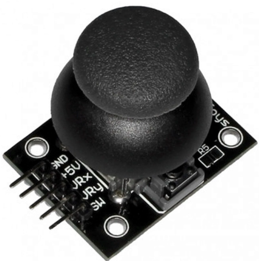

Introduction
The PIO module on the RP2040 is quite a powerfull peripheral, especially in terms of carrying out tasks that require precise timings and GPIO control. These tasks include handling communication protocols such as SPI, I2C, etc. In this project, we have utilized these capabilities of the PIO and the RP2040 as a whole to drive a 640x480 VGA display, and emulate the famous game - Piano Tiles integrated with spatial audio to provide an immersive experience. In the game, the user needs to intercept the falling tiles on the screen using a small base tile that is as the name suggests is present at the bottom of the screen. Each time a tile is intercepted a particular note is played. The spatial audio like effect is created based on which side the user intercepts the tile, i.e. if the tile is intercepted on the left side of the screen, the user will feel that the audio is coming from the left side and vice-versa for the right side. Headphones were used to implement this feature, driven using the PWM peripheral on the RP2040.
The repository containing the code is availabe on
GitHub can be accessed by clicking
here.
To get a little motivation for diving further into this, let's have a look at the end result.
Working Principle
For a detailed understanding of every component we will look at each of the features incorporated one by one.
- VGA
First up is the VGA display. The VGA protocol works based on a few very precisely timed signals/pulses, which can be seen in the figure below.

Here the
HSYNCandVSYNCsignals play a major role in terms of communicating with the display and deciding both the temporal and spatial placement of pixels. The former has control over when a new row of pixels should be displayed, and the latter controls when a new frame needs to come in. All of this is controlled by the PIO module on the RP2040, which runs at a clock speed of 25MHz.The whole protocol can be explained in brief as follows:-
Our display has a resolution of 640x480, as stated earlier, and hence the
HSYNCsignal as the name suggests (Horizontal Sync) needs to be high for 640 clock cycles. -
Our
HSYNCsignal is active-high and starts out asHIGH. During this time, theR,GandBpins are set to varying volatages between 0 and 0.7V, in every clock cycle. -
Once a row of pixels is complete, the
HSYNCenters into its front porch, for which it goes to aLOWstate for 16 clock cycles. Similarly it then moves onto the sync Pulse and back porch part of the protocol and behaves as shown in the figure above. -
On the other hand as stated earlier the
VSYNC(vertical sync) controls the frame. So, during the wholeHSYNCoperation, theVSYNCremainsHIGH. -
The
VSYNCsignal also has the front porch, sync pulse, and the back porch part to it, and behaves based on the diagram displayed above, i.e. it stays at aHIGHstate during its front porch for 10 lines (time needed for theHSYNCsignal to go through 10 rows), and so on.
-
Our display has a resolution of 640x480, as stated earlier, and hence the
- Joystick
The Josytick is a part of the user interface and enables the user to interact with the game. We used a dual-axis analog joystick for our game, that spit out values based on its current position. Since, we only needed a single DOF (Degree of freedom) for playing the game, we did not need data from both the axes of the joystick.
The joystick is connected with an onboard ADC on the RP2040, which converts the analog signal obtained from the joystick into discrete digital levels. Here, we have used a 12-bit value to represent the analog data. Hence, the values from the joystick had a range of 0 to 4095. Once we had the values from the ADC, with some testing we caliberated the joystick based on the requirement for the game. Then the data was mapped to a range of 0 to 50. Finally, after that based on that value the position of the joystick was determined.
- PWM
Now we move on to the audio part of the game from the display.The RP2040 doesn't have a DAC onboard, so we tried to use the PWM peripheral to generate audio notes. This was possible by encoding the notes into a series of duty cycle values and storing it to an array, which can be accessed by the main code and played whenever a tile is intercepted. Also, note that using a single PWM cycle for each value in the array will not create a analog like sound effect, since we need some sort of persistence to emulate actual audio. Therefore, each value in the array is played for 8 cycles to emulate that persistence of sound. This will become more apparent and clear once we take a look at the code.
Components Required
- RP2040 based Development Board
- VGA Cable
- Dual-Axis Analog Joystick
- Resistors - 3 (330 Ohm)
- Wired Headphones
- Female Audio Jack
- Jumper Wires
Circuit Connections
Firmware
Now let's take a look at the code that's driving our RP2040. Here also, we will split our code overview into smaller sections.
- Including the Necessary Libraries
The following code snippet shows some of the standard as well as the hardware libraries that we are going to use in our code. The hardware libraries included are a part of the
PICO-SDKthat abstract register access commands for that particular peripheral into functions and make them available to the user. So, here we are using theadc,pio,dma,irq(interrupts) and thepwmperipheral. Finally, thevga_graphicslibrary that we are using is created by Hunter Adams, which can be found here.
#include "vga_graphics.h"
#include <stdio.h>
#include <stdlib.h>
#include "pico/stdlib.h"
#include "hardware/pio.h"
#include "hardware/dma.h"
#include "hardware/adc.h"
#include "registers.h"
#include "hardware/irq.h" // interrupts
#include "hardware/pwm.h" // pwm
#include "hardware/sync.h" // wait for interrupt
Now, we define some macros and global variables that will be used by our code. As described earlier, headphones are
used to emulate the spatial audio aspect of the game, and to achieve this we control the pins connected to the
left and right channels of the headphones. Therefore, two macros named AUDIO_PIN_LEFT and
AUDIO_PIN_RIGHT are created to improve the code readability and portability. Finally there is another
macro named DELAY_CYCLES which controls the delay between the left and right audio channel. As mentioned
above we encoded our audio notes into an array that contains the duty cycle information for creating a PWM signal. This
array needs to be accessed by our main code to play the actual notes, so we placed the array into a header file and included
that into the source file. Finally, the global variables namely wav_position, flag_start,
audio_note_indx and interception_side are used by the interrupt service routines, and the
function that each of them perform will be explained in later sections.
// Audio PIN is to match some of the design guide shields.
#define AUDIO_PIN_LEFT 28 // you can change this to whatever you like
#define AUDIO_PIN_RIGHT 15 // you can change this to whatever you like
#define DELAY_CYCLES 5
#include "audio_notes/A_major.h"
#include "audio_notes/E_major.h"
#include "audio_notes/B_major.h"
#include "audio_notes/Din_2.h"
#include "audio_notes/Tin_2.h"
#include "audio_notes/Na_2.h"
int wav_position = 0;
int flag_start = 0;
int audio_note_indx = 0;
int interception_side = 0;